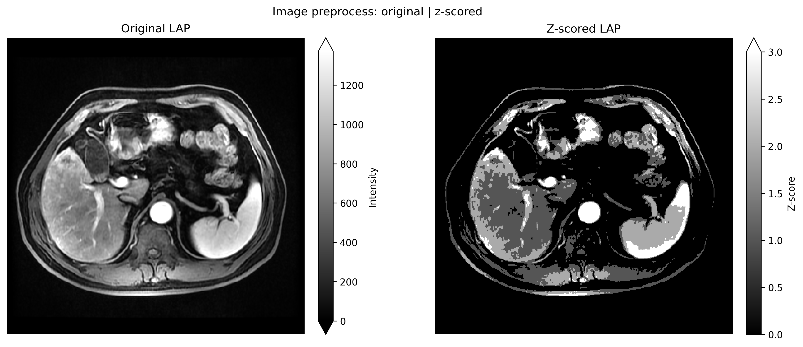
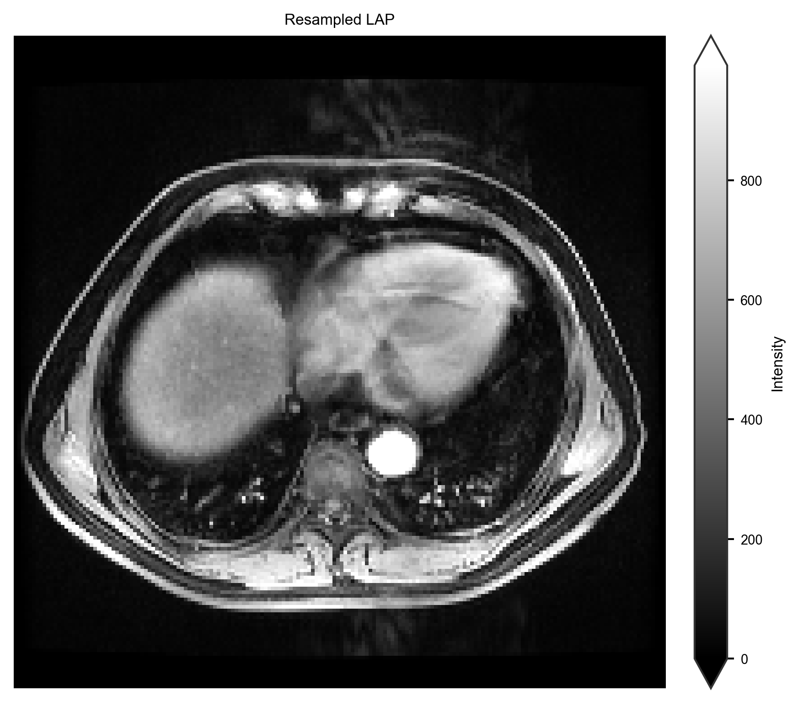
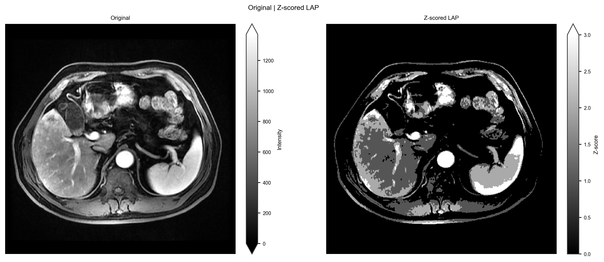
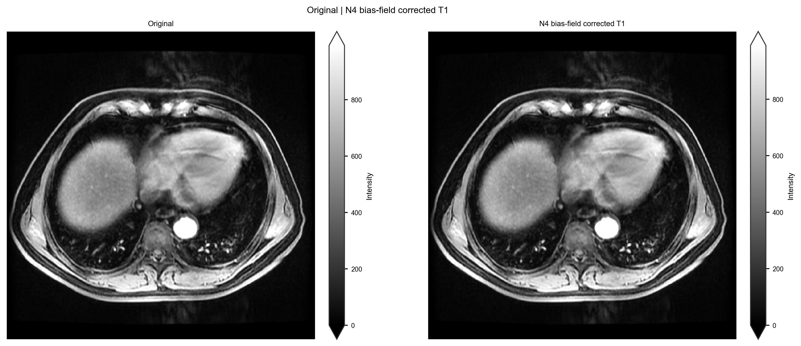
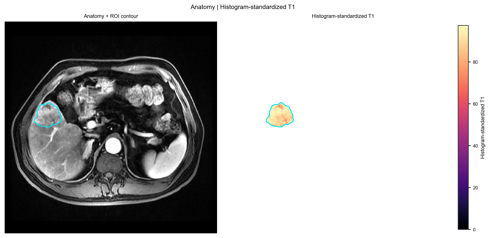
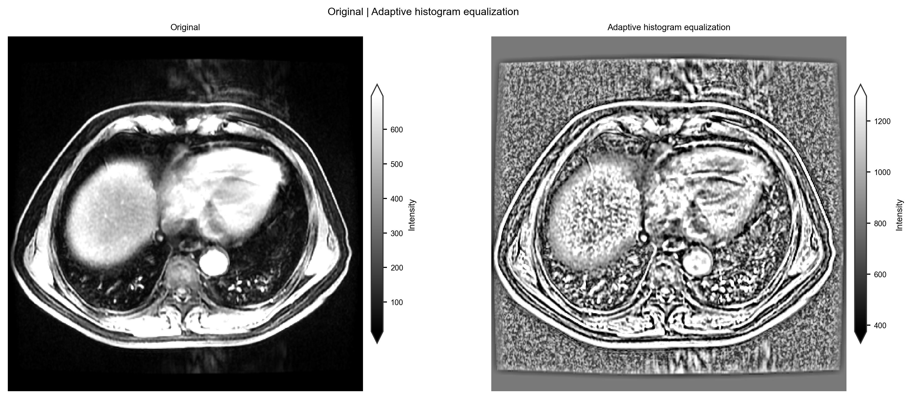
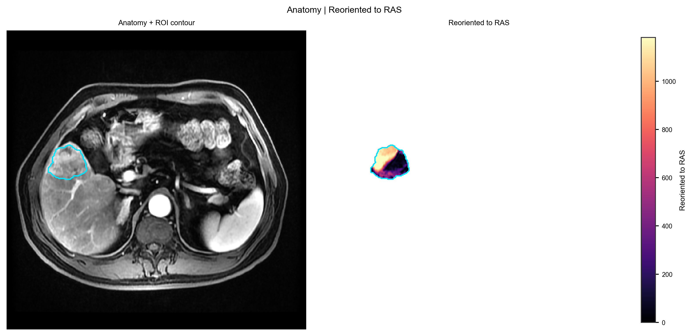
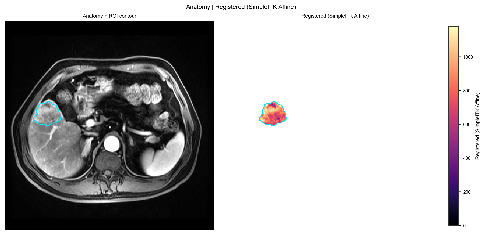

Before: image preprocessing
Note
Supporting integration, not the habitat core. Habitat analysis expects every series of a subject on one voxel grid with the ROI mask (registration / resampling), which this page prepares. The demo pack is already preprocessed – habitat maps: Two-step habitats with a Spec. Intensity normalization for clustering is a habitat stage, not an image step: see Concepts.
Goal: turn images (or DICOM) into a preprocessed images/ + masks/ tree.
First demo run: skip this page — the demo pack already has
demo_data/preprocessed/. Go to Two-step habitats with a Spec.
Run
habit check-config --config config/preprocessing/config_preprocessing_demo.yaml
habit preprocess --config config/preprocessing/config_preprocessing_demo.yaml
Faster smoke:
habit preprocess --config config/preprocessing/config_preprocessing_minimal.yaml
DICOM helpers:
habit dicom-info -i demo_data/dicom -o demo_data/results/htg_dicom_info.csv --one-file-per-folder
habit sort-dicom --config config/dicom_sort/config_sort_dicom.yaml
Your data
Edit ★ in a copied YAML: data_dir (folder or path-list YAML), out_dir,
and modality names. Then habit check-config + habit preprocess.
Success: out_dir/processed_images/images/<subject>/<modality>/ has NIfTI.
Anatomy | processed intensity. The figure is written by the image preprocessing gallery (Before: image preprocessing). Reproduce it:
python docs/source/examples/scripts/image_preprocessing_demo.py
The plot call in that script:
from habit.viz import plot_intensity_slice
fig = plot_intensity_slice(
processed.image(modality),
before=subject.image(modality),
axis=0,
cmap="gray",
image_label="Z-scored LAP",
before_label="Original LAP",
title="Image preprocess: original | z-scored",
colorbar_label="Z-score",
before_colorbar_label="Intensity",
)
{kind=link}

Whole-FOV greyscale z-score panel from subj001 LAP
(demo_data/preprocessed). Independent colorbars show raw intensity
versus z-score (native units; not a shared \([0, 1]\) window).
Image z-score here is per-volume intensity (DICOM/NIfTI tree). It is
not the clustering-time winsorize / minmax chain; skipping that
chain on two-step runs under-expresses habitats — see
Subject-level preprocessing.
Atomic Python (same steps, no YAML)
preprocess_subject() / preprocess_image() take a
Subject or one volume. Copy from Before: image preprocessing
and swap DATA. Per-step figures:
{kind=link}

Resample (full FOV, subj001 LAP).
{kind=link}

Z-score (whole volume; optional ROI stats). Independent colorbars show raw intensity versus z-score.
{kind=link}

N4 bias-field correction. Independent colorbars keep the intensity scale visible.
{kind=link}

Nyúl histogram standardization. Independent colorbars show the mapped intensity range.
{kind=link}

Adaptive histogram equalization. Independent colorbars show the intensity scale.
{kind=link}

Reorient to RAS.
{kind=link}

SimpleITK affine registration (ROI contour follows the transform).
dcm2nii is CLI-only (needs a DICOM tree):
habit preprocess --config config/preprocessing/config_preprocessing_dcm2nii_demo.yaml